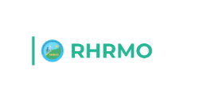
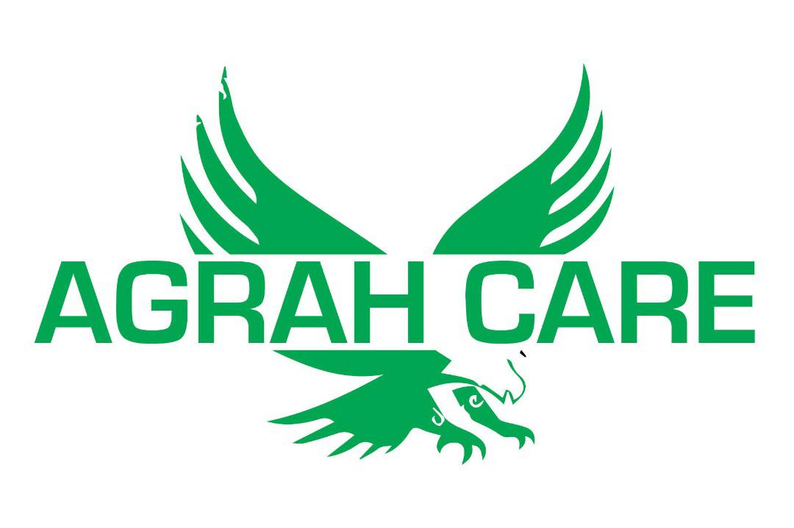
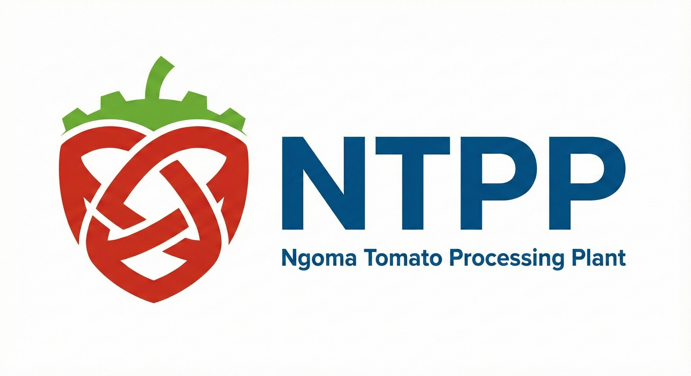

01
Lack of Strategy
Projects launch without a defined problem statement, target users, or success criteria. Execution begins before direction is clear.
No diagnosis before delivery
Prime Logic Ltd helps SMEs, institutions and professional service firms improve performance through research, digital systems, QMS readiness, team capability and strategic visibility.
Trusted by organizations in HR, education, tourism, healthcare, professional services and development projects.
Digital Transformation & Business Systems Consulting for growing organizations. We diagnose before we build, design before we implement, and transfer capability before we exit.
Clean whitespace, structured grids, and architecture-led delivery—built for decision makers.
Many organizations invest in websites, videos or systems without clear diagnosis, adoption plans or measurable outcomes.
Projects launch without a defined problem statement, target users, or success criteria. Execution begins before direction is clear.
Tools, platforms and processes are built in isolation. They don't talk to each other, creating data silos and duplicated effort.
Systems are delivered without training, SOPs or change management. Teams revert to old habits and the investment goes unused.
Results exist but are never communicated to stakeholders, funders or customers. Impact is real but invisible—and therefore unfundable.
No success metrics are defined before work begins. Without a baseline, there is no way to measure progress, justify spend or improve performance.
Prime Logic addresses every one of these gaps through a structured Logic Audit before any build begins.
Start With a Logic AuditThe Prime Loop is not a service list—it is a structured sequence. Every engagement follows the same five-stage flow so that strategy, capability, technology and communication are always connected, never fragmented.
Insight & Diagnosis
We map your situation before recommending anything. Goals, users, constraints and risks are documented and validated.
Capability & Readiness
We build the internal capacity your team needs to own, operate and sustain every system we deliver.
Systems & Platforms
We design and build scalable digital infrastructure grounded in the research and aligned to your team's capability.
Visibility & Storytelling
We translate results into compelling narratives that reach stakeholders, funders and customers through the right channels.
Outcomes & Optimisation
Every engagement closes with defined KPIs, performance data and a continuous improvement loop your team can run independently.
The Prime Loop is the methodology behind all Prime Logic consulting packages—from a single Logic Audit to a full Prime Loop Bundle engagement.
View Consulting Packages →Every package follows the Prime Loop methodology. Scope is confirmed after a Logic Audit so you only invest in what your organization actually needs.
A structured package to build your digital presence, attract the right audience and convert visibility into qualified leads through research-backed strategy and content systems.
An end-to-end engagement that diagnoses your current systems, designs a digital architecture, builds the platform and trains your team to own it—delivered in a structured sprint.
A focused engagement to assess your current quality management practices, close the gaps and prepare your organization for ISO 9001 certification with documented systems and trained staff.
A research-led engagement that documents your organization's impact, builds the evidence base and translates findings into compelling communication for funders, partners and stakeholders.
All prices are indicative starting points. Final scope and investment are confirmed after a Logic Audit. WhatsApp us to discuss your situation →
We diagnose before we build, design before we implement, and transfer capability before we exit. Every engagement is structured so your organization gains lasting systems, not just completed projects.
Define goals, users, constraints, and define success metrics.
Architecture, scope, timeline, and governance—before building.
Delivery plus training, documentation, and team handover.
Campaigns, reporting, and continuous improvement loops.
Every engagement follows the Prime Loop—a proven sequence that turns complexity into clarity, capability, and measurable results.
Clarify goals, users, constraints, and define success metrics.
Architecture, scope, timeline, and governance—before building.
Delivery plus training, documentation, and team handover.
Campaigns, reporting, optimization, and continuous improvement.
Every project is architecture-led: structured, governed, and built for measurable outcomes.
Workshops that turn complexity into a clear execution roadmap with measurable KPIs.
Decision visibility: metrics, trends, and operational performance at your fingertips.
Capability transfer so teams can own, operate, and scale what is built.
Every project follows the Prime Loop—from diagnosis to delivery to measurable impact.


RHRMO had no structured digital presence. Stakeholders and job seekers could not find or engage with the organisation online, limiting reach and credibility.
Prime Logic delivered a Logic Audit, designed a conversion-led website architecture, built the platform on Prime CMS and trained the internal team to manage content independently.

K2 Career Center managed job listings and candidate applications manually via email and spreadsheets, creating bottlenecks and a poor experience for both employers and job seekers.
A custom job portal was designed and built with employer dashboards, candidate profiles, application tracking and automated notifications—with full team training and SOPs on handover.

UtuFlow needed a scalable HR management system to replace fragmented tools and spreadsheets—one that HR teams could own, configure and operate without ongoing technical dependency.
Prime Logic designed and built a modular HRMS covering employee records, leave management, payroll reporting and performance tracking—with role-based access, SOPs and a full capability transfer programme.
Sylvestre brings together academic rigour, published research and hands-on consulting experience to lead every Prime Logic engagement. His work is grounded in evidence, structured by methodology and focused on transferring capability—not dependency.
Holds an MBA in Business Administration and is an active doctoral researcher in digital transformation and organisational systems—bringing academic depth to every consulting engagement.
Research published in MDPI—a globally recognised open-access journal platform—demonstrating peer-reviewed expertise in digital systems, organisational performance and evidence-based strategy.
Hands-on consulting experience across healthcare, education, HR technology, tourism and development sectors—delivering digital systems, QMS readiness and strategic visibility for growing organisations.
“Every organisation deserves a system that works—not just a deliverable that was handed over. We diagnose before we build, and we don’t exit until your team owns the outcome.”
Structured perspectives on digital transformation, systems strategy and organisational performance—built for Rwanda and Africa contexts.
Most digital projects fail not because of poor execution, but because they begin without a clear diagnosis. A Logic Audit maps your goals, users, constraints and risks in 30–60 minutes—giving every subsequent decision a factual foundation. Without it, organisations invest in solutions before they have confirmed the problem.
A system going live is not the finish line—it is the starting point for adoption. Without role-based training, SOPs and a change management plan, teams revert to old habits within weeks. Capability transfer is not optional; it is the difference between a system that works and one that collects dust.
Read Article →Organisations frequently commission websites, videos and social media content without a connected strategy. These outputs only convert when they are anchored to research-backed messaging, a defined audience and a measurable funnel. Visibility without strategy is noise.
Read Article →


Start with a structured diagnostic to clarify your needs, risks and next best step. No commitment required—just clarity.
WhatsApp-first · Response within business hours · On-site workshops available